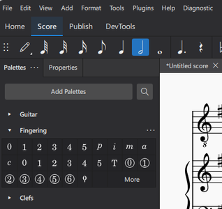
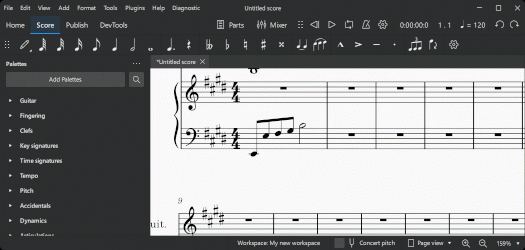
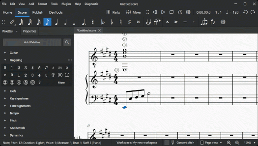

指法
指法类型
各种乐器的指法符号位于指法面板中；其中一些在吉他面板中有重复。

将鼠标悬停在面板图标上可显示符号的名称。
不同类型的指法如下：
- 指法：在键盘记谱中，用于表示左手和右手的指法。也用于吉他音乐中的左手手指。
- 左手吉他指法：在吉他记谱中，1–4 表示左手手指。0（零）表示空弦。T 表示左手拇指。也可用于键盘音乐。
- 右手吉他指法：在吉他记谱中，用于表示右手手指，即：p = 拇指，i = 食指，m = 中指，a = 无名指，c = 小指。
- 弦号（带圆圈）：在吉他记谱中，用于表示弦（1–6，从上到下）。0（零）用于空弦。
- 其它指法：琉特琴指法可以通过单击指法面板中的"更多"找到。
向乐谱添加指法
注意：如果你希望指法显示在吉他谱（TAB）中，请右键单击 TAB，选择 谱表/分谱属性…→高级样式属性；然后勾选标有"在吉他谱中显示指法"的框。
从面板添加指法
要向选中的音符添加指法：
- 选择一个或多个音符；
- 在面板中单击所需的指法符号。
或者，你可以将指法符号从面板拖放到单个音符上。
当指法添加到音符时，焦点会立即转移到该符号上，因此你可以马上进行调整。

使用键盘快捷键添加指法
- 选择一个起始音符；
- 选择以下选项之一： * （对于任何指法）从面板添加所需的指法符号（如上所示）； * （仅限指法）输入"添加指法"的自定义键盘快捷键，然后键入所需数字。\ （注意：你可以从菜单 编辑→偏好设置→快捷键创建此快捷键）
- 选择以下选项之一： * 要将光标移动到下一个音符：按 Space 或 Alt+Right； * 要将光标移动到上一个音符：Shift+Space 或 Alt+Left；
- 键入所需数字；会添加一个与初始指法相同类型的指法。
- 根据需要重复步骤 3 和 4；
- 按 Esc，或单击文档窗口中的空白处，退出。

使用菜单添加指法
- 选择起始音符；
- 从菜单栏中选择 添加→文本→指法；
- 键入第一个音符的指法数字；
- 按空格移动到下一个音符；依此类推。
调整位置
要编辑指法位置，请参阅更改元素位置。
某些指法可以使用 X 快捷键或音符输入工具栏上的翻转方向图标翻转到谱表的另一侧。
更改指法的外观
指法元素的文本格式可以在属性面板的文本部分中调整。有关详细信息，请参阅格式化文本。
指法属性
指法的常规和文本属性可以从属性面板编辑。
有关常规属性，请参阅常规设置。
有关文本属性，请参阅格式化文本。
指法样式
每一类不同的指法都有自己的文本样式。可以从菜单 格式→样式→文本样式 中查看和编辑这些样式。